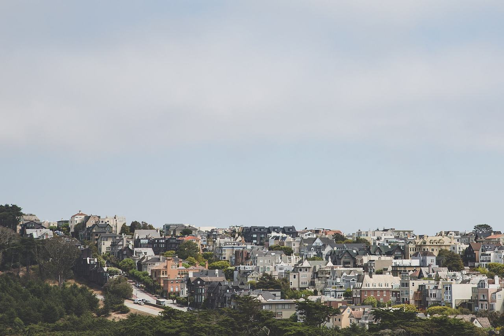

Presidio Heights
The city's Presidio Heights analysis neighborhood, on the ridge between the Presidio and Pacific Heights. Coverage begins with the parcels the Office of the Assessor-Recorder photographed for tax assessment between 1945 and 1991.

Map
Named buildings and landmarks
-
1

-
2

-
3
-
4

-
5
-
6
-
7
-
8
Streets documented so far
- Arguello Boulevard
2 buildings, built 1926–1972; 1 in the Presidio Heights Historic District. - Baker Street
3 buildings, built 1900–1907. - Bush Street
2 buildings, built 1900. - California Street
2 buildings, built 1950–1972; 1 in the California Street Neighborhood Commercial Shopping Center Historic District. - Cherry Street
1 building, built 1914; 1 in the Presidio Heights Historic District. - Clay Street
2 buildings, built 1900–1904; 2 in the Presidio Heights Historic District. - Commonwealth Avenue
1 building, built 1939; 1 in the Jordan Park Historic District. - Euclid Avenue
2 buildings, built 1911; 1 in the Jordan Park Historic District. - Geary Boulevard
1 building, built 1923. - Heather Avenue
1 building, built 1954. - Iris Avenue
1 building, built 1948. - Jackson Street
4 buildings, built 1904–1929; 3 in the Presidio Heights Historic District. - Jordan Avenue
1 building, built 1915; 1 in the Jordan Park Historic District. - Lake Street
1 building, built 1926. - Laurel Street
1 building, built 1920; 1 in the Presidio Heights Historic District. - Locust Street
1 building, built 1916; 1 in the Presidio Heights Historic District. - Lyon Street
1 building, built 1885. - Maple Street
1 building, built 1907. - Mayfair Drive
1 building, built 1953. - Pacific Avenue
1 building, built 1912. - Palm Avenue
2 buildings, built 1920–1921; 2 in the Jordan Park Historic District. - Parker Avenue
1 building, built 1900. - Pine Street
1 building, built 1904. - Post Street
1 building, built 1907. - Presidio Avenue
2 buildings, built 1900–1930. - Sacramento Street
1 building, built 1910. - Spruce Street
2 buildings, built 1900–1931. - Walnut Street
1 building, built 1906; 1 in the Presidio Heights Historic District. - Washington Street
3 buildings, built 1906–1950; 3 in the Presidio Heights Historic District. - Wood Street
1 building, built 1952.
Parks and public spaces
- Laurel Hill Playground
Neighborhood park or playground, 1.6 acres. - Presidio Heights Playground
Neighborhood park or playground, 21,344 sq ft.
Historic districts here
Adjacent neighborhoods
The Presidio is the northern boundary. Pacific Heights continues east from Presidio Avenue, Lone Mountain / USF lies south-east, and the Inner Richmond west and south-west across Arguello Boulevard.